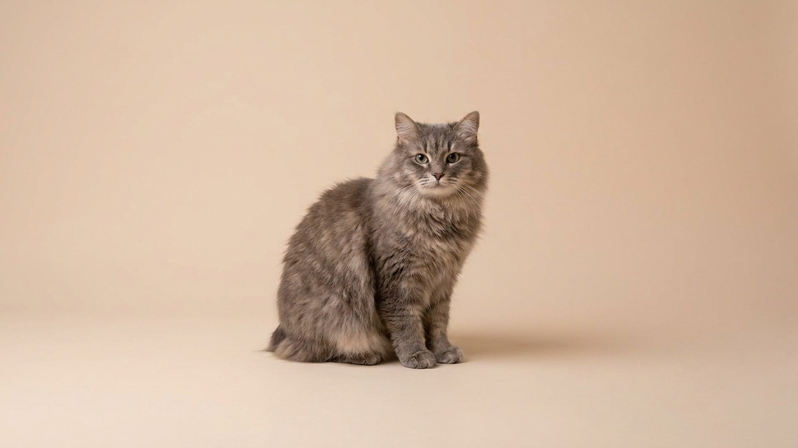

Кимрик (Cymric) выглядит как круглый меховой шар без хвоста — и именно за это его любят. Под плотной двойной шубой скрывается характер, который хозяева описывают словом «собачий»: ходит следом, встречает у двери, учится апортировать. Порода редкая, но те, кто завёл кимрика однажды, возвращаются к ней снова. Ниже — всё про шерсть, быт и характер, чтобы решение было осознанным.
🐾 Ваш питомец — кимрик?
Заведите профиль в AnimaLife: приложение запомнит породу, возраст и вес и будет подсказывать по уходу именно для неё. Вопросы AI-ветеринару — круглосуточно и бесплатно.
Завести профиль → Завести в MAX →
У вас iPhone? AnimaLife есть в App Store
Кимрик — длинношёрстная разновидность мэнкса, породы с острова Мэн. Отличие одно, но заметное: вместо короткой плотной шерсти — густая двойная шуба с выраженным подшёрстком. Стандарт допускает несколько вариантов длины хвоста: рампи (хвоста нет совсем), стампи (небольшой пенёк), ризер и лонги. Большинство котят в помёте рождается с разными вариантами — это особенность породы, а не дефект. Здоровье линии зависит от опыта заводчика: при правильном подборе пар кимрики живут 12–15 лет без специфических проблем.
Кимрик — порода с высокой привязанностью к человеку. Несколько устойчивых черт:
При этом кимрик хорошо переносит одиночество на несколько часов: не разрушает квартиру и не кричит. Но если хозяин постоянно в разъездах — породе будет скучно.
Двойная длинная шерсть кимрика — главная особенность ухода. Без регулярного вычёсывания подшёрсток сваливается в колтуны, особенно за ушами, под мышками и в паху.
Стрижка летом или гигиеническая — не обязательна, но допустима по желанию хозяина или рекомендации грумера.
Бесхвостость — не болезнь, а особенность строения. В повседневной жизни это почти незаметно: кимрик прыгает, лазает и балансирует уверенно. Несколько практических моментов:
Кимрик подходит людям, которые хотят общительного и ласкового кота с характером, готовы вычёсывать шерсть несколько раз в неделю и имеют время на игры. Тем, кто ищет самодостаточного и неприхотливого в уходе питомца — лучше рассмотреть короткошёрстные породы.
🐾 У вас кимрик?
AnimaLife соберёт уход под породу: к каким болезням есть склонность, что проверять по возрасту, чем кормить и когда пора к врачу. Бесплатно, прямо в мессенджере.
Собрать план ухода → Собрать в MAX →
У вас iPhone? AnimaLife есть в App Store
🐾 Понравился разбор?
Подпишитесь на канал — каждый день разбираем по одному тревожному симптому у кошек и собак: что в пределах нормы, а когда пора к врачу. Подпишитесь, чтобы не пропустить разбор, который может спасти здоровье вашего питомца.
Материал носит информационный характер и не заменяет очную консультацию ветеринара.